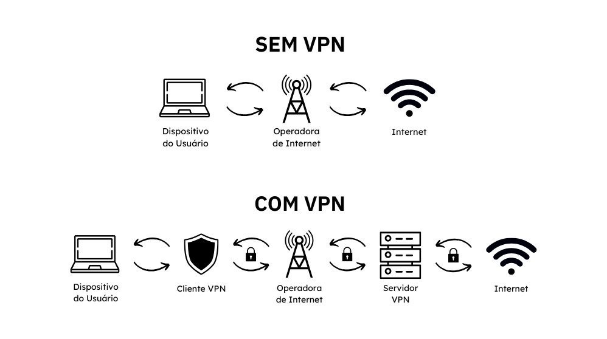
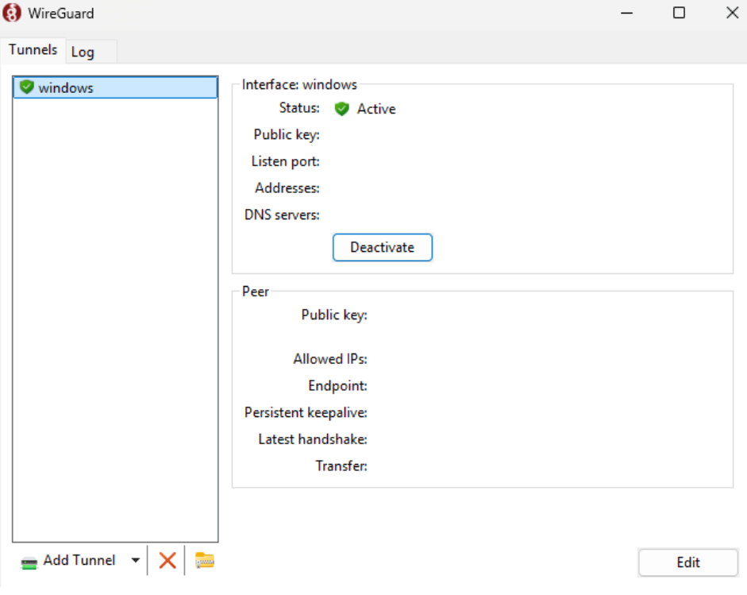
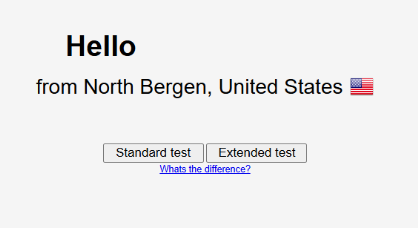

No contexto atual de conectividade digital, a segurança e a privacidade online tornaram-se prioridades. Com isso, as Redes Privadas Virtuais (VPNs, do inglês Virtual Private Networks) desempenham um papel crucial, oferecendo uma solução eficaz para proteger dados e manter o anonimato. Ademais, com o aumento da coleta de dados por governos, empresas e anunciantes, o uso de VPNs se torna essencial para proteger a privacidade dos usuários, ao mascarar o endereço IP e criptografar o tráfego de dados, impedindo que atividades online sejam rastreadas, reforçando o anonimato e dificultando a identificação do usuário.
Conceitos
VPN
Uma VPN (Virtual Private Network) é uma tecnologia que cria uma conexão segura e criptografada entre o dispositivo do usuário e um servidor remoto operado pelo provedor da VPN. Sob uma perspectiva técnica, a VPN encapsula os pacotes de
dados usando protocolos como OpenVPN, WireGuard, IPsec ou L2TP, protegendo-os com criptografia de ponta a ponta. Esse encapsulamento esconde o conteúdo dos pacotes e os metadados, como endereços IP de origem e destino, de interceptadores
ou de provedores de internet (ISPs). Além disso, ao rotear o tráfego pelo servidor da VPN, a localização real do usuário é mascarada, exibindo o endereço IP do servidor remoto. Esse processo amplifica a privacidade, protege contra ataques
man-in-the-middle (MITM) e permite o acesso a conteúdos geograficamente restritos. A confiabilidade da VPN depende da política de logs do provedor, da complexidade da criptografia aplicada e da robustez do protocolo utilizado.

Protocolos VPN
Os protocolos VPN são conjuntos de regras que definem como os dados são transmitidos de forma segura entre o dispositivo do usuário e o servidor VPN. Esses protocolos especificam os métodos de encapsulamento, autenticação e criptografia
para proteger os dados. Por exemplo, o OpenVPN usa TLS para autenticação inicial e criptografia baseada em OpenSSL, permitindo flexibilidade e alta segurança. O IPsec (Internet Protocol Security) opera no nível de rede e utiliza os modos
Transport e Túnel para proteger pacotes IP, com suporte a criptografia AES e autenticação HMAC. O WireGuard, mais recente, é projetado para simplicidade e performance, empregando algoritmos modernos como ChaCha20 para criptografia e Poly1305
para autenticação. Outros protocolos, como L2TP/IPsec, combinam encapsulamento simples com a segurança do IPsec, enquanto o SSTP utiliza o protocolo TLS sobre TCP, tornando-o eficaz em redes restritivas. Cada protocolo possui características
específicas de segurança, velocidade e compatibilidade, sendo escolhidos com base nas necessidades do usuário ou da rede.
Proxy x VPN
A principal diferença entre proxy e VPN está no nível de segurança, criptografia e abrangência de proteção. Um proxy atua como um intermediário entre o dispositivo do usuário e a internet, redirecionando solicitações para mascarar o endereço
IP do cliente. Tecnicamente, ele opera no nível da aplicação (por exemplo, navegadores) e não oferece criptografia padrão, limitando-se a esconder a origem dos dados. Já uma VPN, cria um túnel criptografado entre o dispositivo do usuário
e um servidor remoto, protegendo não apenas o IP, mas todo o tráfego de rede do dispositivo, independentemente da aplicação usada. Em resumo, enquanto o proxy é ideal para mascarar IPs em tarefas específicas, a VPN oferece uma solução
mais robusta para segurança e anonimidade em toda a conexão.
Políticas de Não-Armazenamento de Logs (No-Logs Policy)
A Política de Não-Armazenamento de Logs (No-Logs Policy) é um compromisso técnico adotado por alguns provedores de VPNs na qual possui o intuito de não registrar ou armazenar informações relacionadas às atividades ou conexões dos usuários. Essa
política implica que o provedor configura seus servidores para operar de forma efêmera, utilizando sistemas que evitam o registro de metadados como endereços IP, timestamps, largura de banda utilizada ou sites visitados. Logo, essa configuração
pode incluir o uso de servidores RAM-only (memória volátil), que apagam automaticamente todas as informações ao serem reiniciados, e a adoção de protocolos de comunicação que minimizem a necessidade de armazenamento de logs. Uma implementação
eficaz depende de auditorias independentes, para garantir que o provedor não coleta dados sub-repticiamente, e da localização dos servidores em jurisdições favoráveis à privacidade, onde legislações locais não obriguem a retenção de dados.
Essa abordagem é crucial para garantir anonimidade e proteção contra vigilância ou solicitações legais de informações dos usuários.
Kill Switch e DNS Leak
O Kill Switch e a DNS Leak Protection são recursos técnicos implementados em VPNs para garantir a segurança e a privacidade do usuário. O Kill Switch funciona monitorando constantemente a conexão com o servidor VPN. Caso a conexão seja
interrompida, ele bloqueia imediatamente o tráfego de rede do dispositivo para evitar que os dados sejam enviados sem a proteção do túnel criptografado, protegendo o IP real e outras informações sensíveis. Por outro lado, a DNS Leak Protection
previne que as solicitações de resolução de nomes de domínio (DNS) escapem do túnel VPN e sejam enviadas diretamente ao provedor de internet (ISP). Sem essa proteção, mesmo com a VPN ativa, o ISP poderia registrar os sites visitados pelo
usuário. Esse recurso redireciona todas as consultas DNS para servidores gerenciados pela VPN, encapsulando-as no túnel criptografado. Ambos os mecanismos trabalham em conjunto para evitar falhas que comprometam a anonimidade e a privacidade
do usuário durante o uso da VPN.
Hands-on
VPS
A escolha de uma VPS (Virtual Private Server) para a criação de uma VPN é crucial, pois sua localização influencia diretamente na latência, velocidade de conexão e geolocalização da conexão do usuário.
Escolha do protocolo VPN
Ao escolher um protocolo VPN, é essencial considerar segurança, desempenho e facilidade de implementação. O WireGuard tem se destacado como uma escolha moderna e eficiente, oferecendo uma arquitetura simplificada, baseada em criptografia
de última geração, como ChaCha20 e Poly1305. Diferente de alternativas mais tradicionais como OpenVPN e IPSec, o WireGuard é mais leve, proporcionando conexões rápidas e estáveis, mesmo em dispositivos com recursos limitados. Além disso,
sua base de código enxuta reduz a superfície de ataque e facilita auditorias de segurança, tornando-o ideal para quem busca anonimidade e proteção de dados com alto desempenho. Portanto, o aplicativo de software e o protocolo escolhido
foi o WireGuard.
*Vale ressaltar que apenas o servidor VPN pode descriptografar os dados, garantindo que ninguém no meio do caminho (como provedores de internet, hackers ou agências governamentais) possa ler as informações.
Preparativos para a confecção da VPN
Após escolher um provedor de VPS, como Digital Ocean, Vultr ou Linode, e criar sua instância na mesma, além de acessa-la, atualize o sistema operacional.
apt update && apt upgrade -y
Em seguida, instale o WireGuard e suas dependência.
apt install wireguard wireguard-tools -y
Perante a configuração da VPN, primeiramente, necessita-se habilitar o encaminhamento IP, para que o servidor encaminhe o tráfego entre a interface do WireGuard e a internet.
vim /etc/sysctl.conf
Descomente a linha "#net.ipv4.ip_forward=1"
Em seguida, aplique a alteração
sudo sysctl -p
Agora, certifique-se que o módulo do kernel WireGuard está carregado:
lsmod | grep wireguard
Caso o comando não obter retorno, carregue o módulo.
sudo modprobe wireguard
Configurando o WireGuard no Servidor
Na pasta do WireGuard, na qual correspondê-se a /etc/wireguard, gere as chaves pública e privada.
wg genkey | tee privatekey | wg pubkey > publickey
Em seguida, crie a interface Wireguard, ao definir o arquivo wg0.conf.
sudo vim /etc/wireguard/wg0.conf
[Interface]
PrivateKey = "conteúdo do arquivo privatekey"
Address = 10.10.10.1/24 # Endereço IP interno do servidor na rede VPN
ListenPort = 51820 # Porta padrão do WireGuard
# SaveConfig = true # Opcional: para salvar mudanças de configuração
PostUp = iptables -A FORWARD -i %i -j ACCEPT; iptables -t nat -A POSTROUTING -o "interface_de_rede_principal" -j MASQUERADE
PostDown = iptables -D FORWARD -i %i -j ACCEPT; iptables -t nat -D POSTROUTING -o "interface_de_rede_principal" -j MASQUERADE
Em seguida, habilite o WireGuard.
sudo systemctl enable wg-quick@wg0
sudo systemctl start wg-quick@wg0
Por fim, verifique o status. Caso a interface wg0 apareça ativa, o processo foi feito com sucesso.
sudo wg show wg0
Configurando o Cliente WireGuard
No dispositvo na qual será o cliente da VPN, abra o terminal, e gere as chaves do cliente.
wg genkey | tee privatekey | wg pubkey > publickey
Em seguida, ainda no dispositivo cliente, crie um arquivo "cliente.conf" e adicione o conteúdo:
[Interface]
PrivateKey = "conteúdo do arquivo privatekey do cliente"
Address = 10.10.10.2/24 # IP único para cada cliente
DNS = 8.8.8.8, 8.8.4.4 # Opcional: Servidores DNS
[Peer]
PublicKey = "conteúdo do arquivo publickey do servidor"
AllowedIPs = 0.0.0.0/0 # Rota tudo pelo VPN
Endpoint = "ip_publico_do_servidor":"porta_do_servidor" # IP e porta do servidor
PersistentKeepalive = 25 # Envia um pacote a cada 25 segundos
De volta ao servidor, edite novamente o arquivo da interface WireGuard, visando adicionar a seção [peer] para o novo cliente.
vim /etc/wireguard/wg0.conf
[Peer]
PublicKey = "conteúdo do arquivo publickey do cliente"
AllowedIPs = 10.10.10.2/32 # IP individual do cliente
Por fim, a fim de aplicar a nova atualização da interface WireGuard, reinicie o serviço WireGuard.
sudo systemctl restart wg-quick@wg0
Utilização
No ambiente Linux, basta utilizar o comando "wg-quick up cliente.conf"
No ambiente Windows , baixe o aplicativo WireGuard atráves de https://www.wireguard.com/install/. Em seguida, clique em "Add Tunel" e selecione o arquivo "cliente.conf"
Portanto, automaticamente, a VPN será conectada. 
A fins de validação, acesse os sites https://ipaddress.my/ e https://dnsleaktest.com. Ambos os sites devem retornar o IP público da VPS, criando assim uma VPN. 
Por fim, vale ressaltar a importância de configurar um firewall adequado ao ambiente da VPS, protegendo-se assim de acessos não autorizados. Além disso, manter as chaves privadas em ambiente seguro.